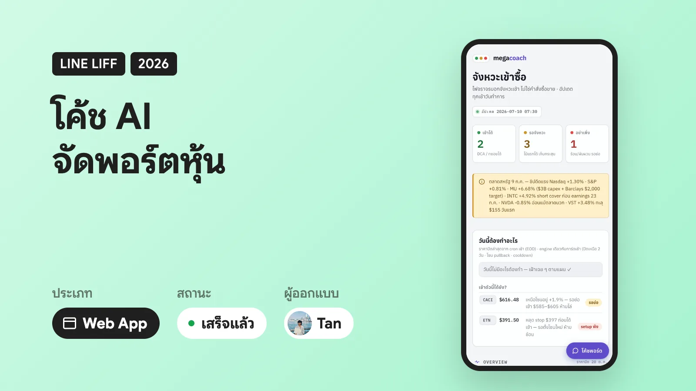
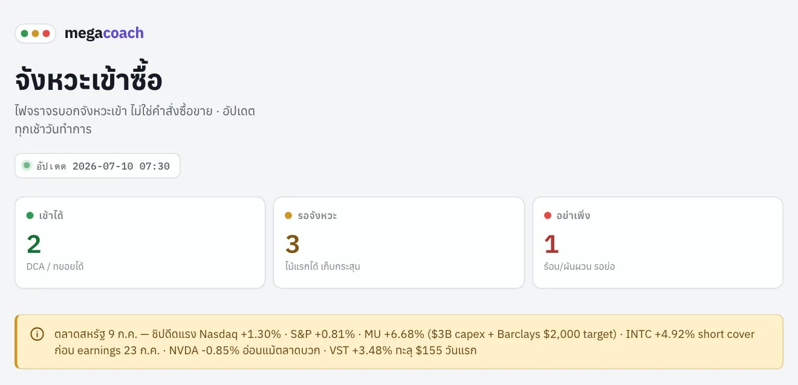
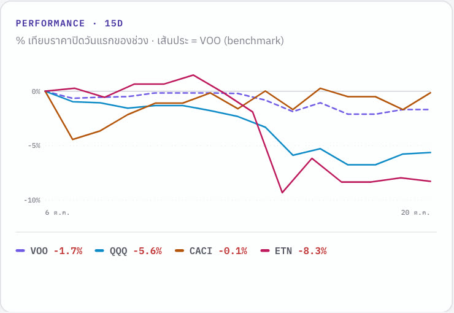
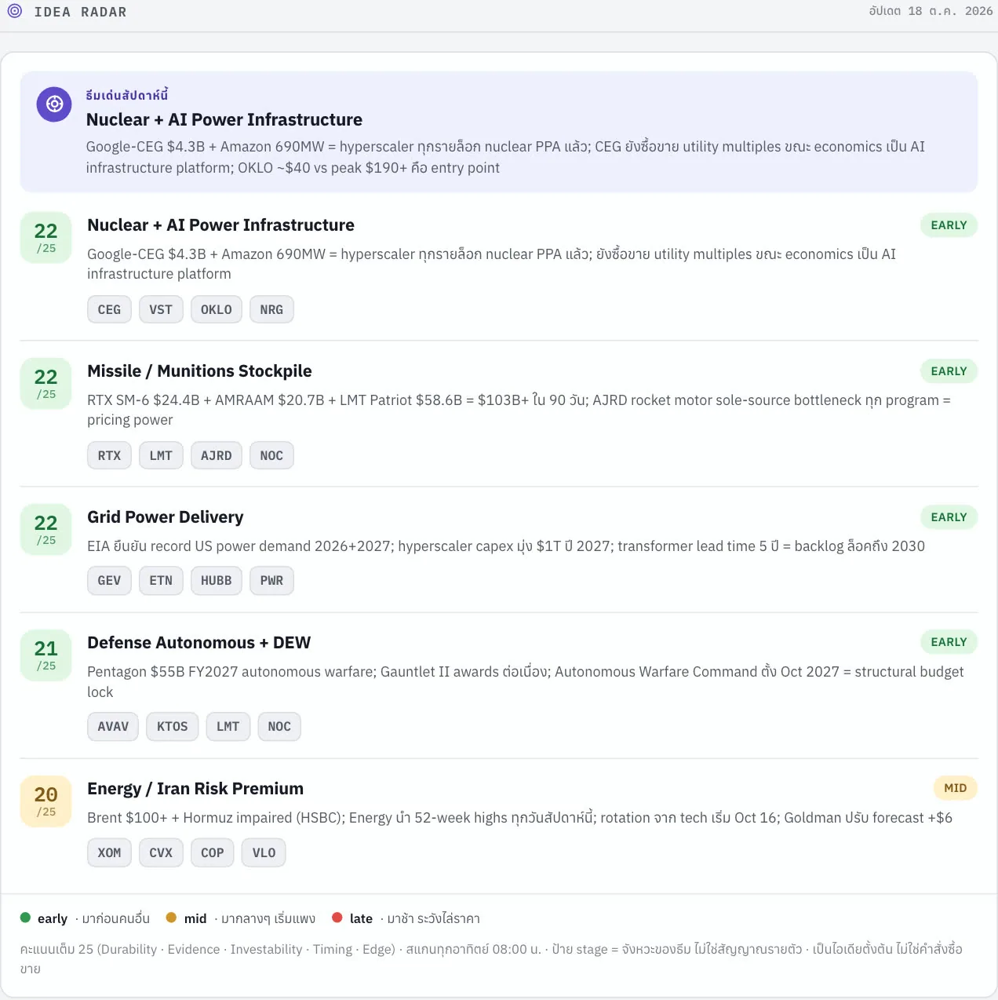
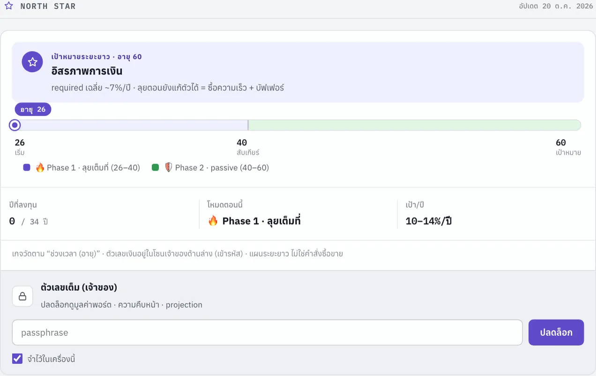

MegaCoach
ระบบ AI coach ส่วนตัวที่จัดพอร์ตหุ้น US ผ่าน Dime — รวม dashboard, ที่ปรึกษาที่รู้พอร์ตจริง และการเตือนจังหวะเข้า-ออกอัตโนมัติไว้ใน LINE เดียว โดยตัวเลขเงินถูกเข้ารหัสในเครื่องก่อนออกไป cloud เห็นแค่ ciphertext

ระบบส่วนตัวที่ทำหน้าที่เป็น "โค้ชพอร์ต" — รวม dashboard, ที่ปรึกษา AI ที่รู้พอร์ตจริง และการเตือน DCA / stop / RMF อัตโนมัติไว้ใน LINE เดียว โดย ตัวเลขเงินถูกเข้ารหัสในเครื่องก่อนออกไป cloud — เซิร์ฟเวอร์เห็นแค่ ciphertext
ปัญหาที่เจอ
จัดพอร์ตหุ้นสหรัฐฯ คนเดียว ทำไมถึงเหนื่อยและพลาดง่ายกว่าที่คิด?

ข้อมูลพอร์ตกระจัดกระจาย — holdings อยู่ที่หนึ่ง, watchlist อยู่อีกที่, เป้าหมายระยะยาวอยู่ในหัว พอไม่มีระบบเตือนก็ ลืม DCA, ลืม stop, และเผลอ "ไล่ของร้อน" ตามอารมณ์ อยากมีที่ปรึกษาที่รู้พอร์ตเราจริง ๆ และดูทุกอย่างบนมือถือได้ — แต่ตัวเลขเงินเป็นเรื่องส่วนตัวมาก ไม่อยากให้ cloud ไหนเห็น
ข้อมูลพอร์ตกระจัดกระจาย
holdings, watchlist, กองทุน RMF, เป้าหมายเกษียณ — อยู่คนละที่ ไม่มีมุมมองรวมที่เห็น "ภาพพอร์ตทั้งใบ" ในหน้าจอเดียว
อารมณ์พาไล่ของร้อน (FOMO)
เห็นหุ้นซิ่งทำ new high แล้วอยากกระโดดตาม — เข้าแบบไม่มีแผน ไม่มีจุด stop ที่กล้าผิด สุดท้ายเสี่ยงล้างพอร์ตมากกว่าได้กำไร
ลืม DCA / ลืม stop
วินัยหลุดทันทีที่ไม่มีคนเตือน — เดือนนี้ลืมเติมพอร์ต, ราคาหลุดจุดตัดขาดทุนแล้วไม่รู้ตัว, ใกล้สิ้นปีเพิ่งนึกได้ว่ายังซื้อ RMF ไม่ถึงเป้า
chatbot ทั่วไปตอบลอย ๆ
ถาม AI เรื่องหุ้นได้ แต่มันไม่รู้ว่าเราถืออะไร งบเท่าไหร่ รับความเสี่ยงแค่ไหน — คำแนะนำเลยเป็นสูตรสำเร็จ ไม่เข้ากับพอร์ตจริง
ตัวเลขเงินอ่อนไหวมาก
อยากดู dashboard บนมือถือ/ส่งลิงก์ให้ตัวเองเปิดที่ไหนก็ได้ แต่ถ้า deploy ขึ้น cloud ตรง ๆ = มูลค่าพอร์ตจริงไปนอนอยู่บนเซิร์ฟเวอร์คนอื่น
วิธีแก้ปัญหา
ให้ระบบทำงานน่าเบื่อทั้งหมดแทน — รวมข้อมูล, เฝ้าตลาด, เตือนจังหวะ — โดยที่ตัวเลขเงินไม่เคยออกจากเครื่องแบบอ่านได้


รวมทุกอย่างไว้ที่ LIFF dashboard เดียว
เปิดจาก LINE → เห็นจังหวะเข้าซื้อ (entry signal), เกจ North Star, สถานะ RMF, แผน DCA รายเดือน ครบในหน้าจอเดียว บนมือถือ
AI coach ที่รู้พอร์ตจริง
ก่อนตอบทุกครั้ง เสียบ context พอร์ต + ปรัชญา Fear of Ruin > FOMO เข้า system prompt แล้วเปิด web search ดึงข้อมูลสด — ตอบตามงบ/ความเสี่ยงจริง ไม่เชียร์ลอย ๆ
เตือนอัตโนมัติทุกเช้าใน LINE
DCA รายเดือน, RMF ควรสับ, ราคาหลุด stop / ถึงเป้าทำกำไร — ส่งเป็น Flex card ที่ สีหัวการ์ดสื่อระดับความเร่ง (ปกติ / มีจังหวะ / ด่วน)
Zero-Knowledge — เข้ารหัสในเครื่อง
ตัวเลขจริงถูก encrypt ด้วย AES-256-GCM ในเบราว์เซอร์/เครื่องก่อนส่ง — cloud, relay, git เห็นแค่ ciphertext ถอดได้เฉพาะคนที่รู้ passphrase
Mac = แหล่งความจริงเดียว
เครื่องส่วนตัวดึงราคาสด → คำนวณมูลค่า → เข้ารหัส → publish โซนราคาที่ sanitize แล้ว → git push เอง คีย์ไม่เคยออกจากเครื่อง
วิธีทำงาน — 4 จังหวะ
จากราคาสดในตลาด จนถึงการ์ดเตือนใน LINE — วนอัตโนมัติทุกวันด้วย launchd

ดึงราคาสด
Mac ดึงราคาหุ้น/FX (Yahoo) + ผลตอบแทนกองทุน (Finnomena) แบบ keyless
คำนวณ + เข้ารหัส
คิดมูลค่าพอร์ต + requiredCAGR → เข้ารหัส AES-256-GCM → publish โซน sanitized
push → deploy
git push → Vercel deploy · LIFF dashboard + serverless routines อ่านข้อมูลใหม่
เตือน / เปิดดู
LINE ส่ง Flex card เมื่อถึงเงื่อนไข · เปิด dashboard = ถอดรหัสในเครื่องด้วย passphrase
Tech Stack & Architecture
2 ฝั่งชัดเจน — Mac (แหล่งความจริง + คีย์) กับ Cloud (แสดงผล + เตือน) เชื่อมกันด้วย ciphertext เท่านั้น

LINE + LIFF = แอปที่เปิดอยู่แล้วทุกวัน ไม่ต้องติดตั้งอะไรใหม่ · Vercel Serverless — webhook/coach/relay เป็น stateless function เล็ก ๆ ไม่ต้องดูแลเซิร์ฟเวอร์ · Web Crypto (AES-256-GCM + PBKDF2 250k) — เข้ารหัสได้ทั้งใน Node/Bun และในเบราว์เซอร์ด้วยโค้ดชุดเดียวกัน = zero-knowledge จริง · Mac + launchd ทำหน้าที่เป็น source of truth ที่ถือคีย์ไว้ — cloud จึงไม่มีวันเห็นตัวเลขเงิน
สิ่งที่สร้าง — 8 ความสามารถหลัก
ครบ loop ตั้งแต่รวมข้อมูลพอร์ต ถึงการเตือนที่ปลอดภัย

AI Portfolio Coach
เสียบ context พอร์ต + North Star เข้า system prompt ก่อนตอบ + เปิด web search ดึงข้อมูลสด · มองภาพรวมพอร์ต ไม่ใช่หุ้นตัวเดียว
Morning Brief Engine
ประกอบ Flex card ตาม "mood" — calm / warn / urgent — สีหัวการ์ด + แถบเตือนสื่อระดับความเร่งของ action
North Star Gauge
เกจเป้าหมายระยะยาว + pace tracker · คำนวณ requiredCAGR สดจากมูลค่าปัจจุบันด้วย bisection solver
Zero-Knowledge Layer
AES-256-GCM + PBKDF2 250k · เข้ารหัส/ถอดรหัสด้วยโค้ดชุดเดียวทั้งฝั่งเครื่องและเบราว์เซอร์ · ปลดล็อกด้วย passphrase
LINE Form + ZK Relay
พิมพ์ keyword → bubble → ฟอร์ม LIFF → เข้ารหัสในเบราว์เซอร์ → KV relay → Mac ดึงมาถอด · relay รับเฉพาะ ciphertext
Watchlist Triggers
ดึงราคาสด (keyless) เทียบโซน entry / stop / trim · ยิงเตือนเฉพาะเมื่อแตะโซน + cooldown กันสแปมราย ticker
RMF Switch Advisor
ดึงผลตอบแทน 1/3/5 ปีจาก Finnomena → ตัด verdict (ควรสับ / พิจารณา / โอเค) + เตือนซื้อให้ถึงเป้าโซนภาษีก่อนสิ้นปี
Sanitized Publish Pipeline
publish เฉพาะโซนราคา + held-flag ให้ cloud อ่าน · มี self-check regex กันข้อมูล sensitive (จำนวนหุ้น/เงิน) หลุด
หน้าตา — การ์ดเตือนใน LINE
ทุกเช้า ระบบสรุปสิ่งที่ต้องทำเป็น Flex card — สีหัวการ์ดบอกทันทีว่าต้องรีบแค่ไหน
Hack กับปัญหา
6 โจทย์วิศวกรรมที่ต้องคิดทางแก้เอง — ความปลอดภัย + platform quirk + reliability

อยากดู dashboard บน cloud แต่ห้าม cloud เห็นเงิน
deploy static ขึ้น Vercel = ใครเปิดลิงก์ก็เห็น ถ้าฝังตัวเลขจริงลงไฟล์ = มูลค่าพอร์ตหลุดทันที
AES-256-GCM + PBKDF2 250k ในเครื่องก่อน แล้ว push เฉพาะ ciphertext · dashboard ถอดรหัสฝั่ง client ด้วย Web Crypto หลังผู้ใช้ใส่ passphrase — cloud ถือแต่ blob ที่อ่านไม่ออกLINE webhook verify signature ไม่ผ่าน
ต้อง verify x-line-signature จาก raw body — แต่ Vercel parse body เป็น object ให้ก่อน ทำให้ HMAC ที่คำนวณไม่ตรง เลย reject ของจริง
bodyParser: false) แล้วอ่าน raw stream เอง → คำนวณ HMAC-SHA256 บน byte ดิบเป๊ะ ๆ ก่อนค่อย JSON.parse — signature จึงตรง กันคนยิง webhook ปลอมได้จริงเลขต้องสดทุกวัน แต่คีย์ห้ามออกจากเครื่อง
ถ้าให้ cloud คำนวณมูลค่า = ต้องเอาคีย์ขึ้น cloud (ขัดกับ zero-knowledge) แต่ถ้าไม่อัปเดต ตัวเลขก็ค้าง
launchd ปลุก Bun script ทุกเช้า ดึงราคา → คำนวณ → เข้ารหัส → git push เอง · คีย์อ่านจาก macOS Keychain ไม่เคยขึ้น cloud · git push กลายเป็น deploy pipelinecloud routine ต้องรู้ "โซนราคา" แต่ห้ามรู้ "จำนวนหุ้น/เงิน"
routine ฝั่ง cloud ต้องเทียบราคาสดกับ entry/stop เพื่อเตือน — แต่ข้อมูลพวกนั้นอยู่ปนกับจำนวนหุ้นและมูลค่าจริง
publish-levels ที่คัดออกมาเฉพาะ ticker + โซน + held-flag ลง JSON สาธารณะ · มี --check รัน regex กันคำอย่าง share/cash/value/บาท หลุด — ผิดเมื่อไหร่ build failเตือนซ้ำ ๆ ทุกวันจนน่ารำคาญ
ราคายังอยู่ใต้ stop หลายวันติด = ถ้ายิงทุกวันคนก็เลิกอ่าน · แถม Mac กับ cloud อาจเตือนเรื่องเดียวกันซ้อนกัน
ticker:kind (เตือนแล้วเงียบ N วัน) + แบ่งหน้าที่ชัด — Mac ยิงเฉพาะ stop/trim ที่ safety-critical, cloud รับ entry nudge ไป กันเตือนซ้ำและกัน alert fatigueดึงราคาพลาดตอนเครื่องเพิ่งตื่นจาก sleep
launchd ปลุกงานตอน Mac เพิ่งตื่น — บางครั้ง WiFi ยังไม่กลับมา ทำให้ fetch ราคาแรก ๆ ล้มเหลว แล้วงานทั้งรอบพัง
Design Decision ที่ตั้งใจเลือก
ขอบเขตที่จงใจ "ไม่ทำ" — เพื่อให้เครื่องมือปลอดภัยและไว้ใจได้

เครื่องมือนี้เป็น "โค้ช" ไม่ใช่ "บอทเทรด" — มันเตือนและวิเคราะห์ ไม่กดออเดอร์แทน ทุกการ์ดปิดท้ายว่า "ข้อมูลเชิงวิเคราะห์ ไม่ใช่คำสั่งซื้อขาย" การตัดสินใจสุดท้ายเป็นของคนเสมอ · และตัวเลขเงินทุกจุดเข้ารหัสในเครื่องก่อนออกไป ขอบเขตชัดตั้งแต่ต้น = ระบบเล็ก ตรงไปตรงมา และไว้ใจได้
เตือน ไม่กดออเดอร์เอง
ให้คนเป็นคนตัดสินใจ — ระบบแค่เตรียมข้อมูลให้
ciphertext เท่านั้นขึ้น cloud
relay/git เห็นแต่ blob · คีย์อยู่ในเครื่องล้วน
Fear of Ruin > FOMO
ปรัชญาเอาตัวรอดก่อน ฝังใน system prompt ของโค้ช
โซน sanitized เท่านั้น
cloud รู้แค่โซนราคา ไม่รู้จำนวนหุ้น/เงิน
Knowledge Domain ที่แข็งขึ้น
5 พื้นที่ความรู้ที่ระดับเราขยับขึ้นจริงจากการทำโปรเจกต์นี้

ลงมือใช้ Web Crypto จริง — PBKDF2 derive key จาก passphrase, AES-256-GCM encrypt/decrypt, จัดการ salt/iv/base64 เอง แล้วออกแบบ flow ให้คีย์ไม่เคยออกจากเครื่อง (relay รับแต่ ciphertext) บทเรียน: zero-knowledge ไม่ใช่ magic — มันคือการวางขอบเขตว่า "ใครถือคีย์" ให้ถูกที่
ต่อ LINE Messaging API (reply/broadcast), ฝัง LIFF webview, verify webhook signature บน raw body, ออกแบบ Flex bubble ที่ปรับสีตาม state — และเข้าใจ quirk ของ serverless (body parsing, cold start, stateless) บทเรียน: การ integrate platform จริงคือการอ่าน spec + จัดการ edge case ของ runtime
วางสถาปัตยกรรม "เครื่องเดียวถือความจริง" — launchd orchestrate หลาย Bun script ต่อกัน (pull → update → publish → seed), ใช้ git push เป็น deploy, ออกแบบทุกขั้นให้ best-effort (network พร้อมไม่พร้อมก็ไม่ล้มทั้งงาน) บทเรียน: ระบบอัตโนมัติที่ดีต้องคิดเผื่อวันที่ทุกอย่างไม่พร้อม
เขียน system prompt ที่ฝังปรัชญาการลงทุน (Fear of Ruin, core vs satellite), inject context พอร์ตแบบ dynamic ก่อนถาม, เปิด tool web_search ให้ดึงข้อมูลสด, และ post-process คำตอบ (strip citation/artifact) บทเรียน: คุณภาพผู้ช่วย AI อยู่ที่การ "กำกับบริบทและขอบเขต" มากกว่าตัวโมเดล
เขียน bisection solver หา requiredCAGR จากมูลค่าปัจจุบัน + เงินเติมรายเดือน, โมเดลเพดานภาษี RMF + verdict สับกองจากผลตอบแทนจริง, แยกตรรกะ core (ถือยาว) ออกจาก satellite (เก็งสั้นด้วย TA) บทเรียน: โดเมนความรู้ (การเงิน) คือหัวใจ — โค้ดแค่ทำให้กติกาทำงานอัตโนมัติและสม่ำเสมอ